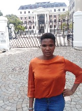
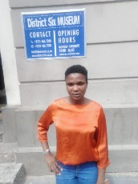

Parliament of RSA
Parliament is one of beautifully designed historic building in Cape Town
It was Built in 1885
Been one of the most dramatic political arenas in the world.

Iziko Museum
Iziko Museums of South Africa offer *FREE entry to selected museums on certain commemorative days.
Iziko, is an isiXhosa word, meaning ‘hearth’, and embodies the spirit of a transformed institution.
Iziko seeks to celebrate our heritage whilst generating new cultural legacies.

District Six Museum
The museum, the Stepping Stones Children’s Centre and Ons Plek, a shelter for girls.
District Six Museum Foundation was established in 1989.
There is also a bookshop and coffee shop